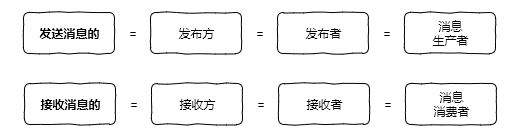
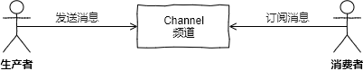
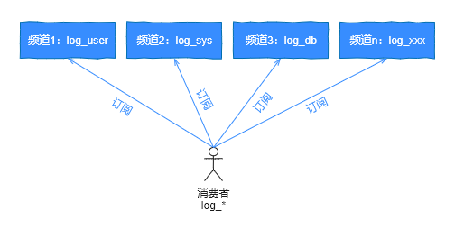

- 01 Redis 是如何执行的.md
- 02 Redis 快速搭建与使用.md
- 03 Redis 持久化——RDB.md
- 04 Redis 持久化——AOF.md
- 05 Redis 持久化——混合持久化.md
- 06 字符串使用与内部实现原理.md
- 07 附录：更多字符串操作命令.md
- 08 字典使用与内部实现原理.md
- 09 附录：更多字典操作命令.md
- 10 列表使用与内部实现原理.md
- 11 附录：更多列表操作命令.md
- 12 集合使用与内部实现原理.md
- 13 附录：更多集合操作命令.md
- 14 有序集合使用与内部实现原理.md
- 15 附录：更多有序集合操作命令.md
- 16 Redis 事务深入解析.md
- 17 Redis 键值过期操作.md
- 18 Redis 过期策略与源码分析.md
- 19 Redis 管道技术——Pipeline.md
- 20 查询附近的人——GEO.md
- 21 游标迭代器（过滤器）——Scan.md
- 22 优秀的基数统计算法——HyperLogLog.md
- 23 内存淘汰机制与算法.md
- 24 消息队列——发布订阅模式.md
- 25 消息队列的其他实现方式.md
- 26 消息队列终极解决方案——Stream（上）.md
- 27 消息队列终极解决方案——Stream（下）.md
- 28 实战：分布式锁详解与代码.md
- 29 实战：布隆过滤器安装与使用及原理分析.md
- 30 完整案例：实现延迟队列的两种方法.md
- 31 实战：定时任务案例.md
- 32 实战：RediSearch 高性能的全文搜索引擎.md
- 33 实战：Redis 性能测试.md
- 34 实战：Redis 慢查询.md
- 35 实战：Redis 性能优化方案.md
- 36 实战：Redis 主从同步.md
- 37 实战：Redis哨兵模式（上）.md
- 38 实战：Redis 哨兵模式（下）.md
- 39 实战：Redis 集群模式（上）.md
- 40 实战：Redis 集群模式（下）.md
- 41 案例：Redis 问题汇总和相关解决方案.md
- 42 技能学习指南.md
- 43 加餐：Redis 的可视化管理工具.md
24 消息队列——发布订阅模式
在 Redis 中提供了专门的类型：Publisher（发布者）和 Subscriber（订阅者）来实现消息队列。
在文章开始之前，先来介绍消息队列中有几个基础概念，以便大家更好的理解本文的内容。
首先，发布消息的叫做发布方或发布者，也就是消息的生产者，而接收消息的叫做消息的订阅方或订阅者，也就是消费者，用来处理生产者发布的消息。

除了发布和和订阅者，在消息队列中还有一个重要的概念：channel 意为频道或通道，可以理解为某个消息队列的名称，首先消费者先要订阅某个 channel，然后当生产者把消息发送到这个 channel 中时，消费者就可以正常接收到消息了，如下图所示：

普通订阅与发布
消息队列有两个重要的角色，一个是发送者，另一个就是订阅者，对应的命令如下：
- 发布消息：publish channel "message"
- 订阅消息：subscribe channel
下面我们来看具体的命令实现。
订阅消息
127.0.0.1:6379> subscribe channel #订阅消息channel
Reading messages...
1) "subscribe"
2) "channel"
3) (integer) 1
相关语法：
subscribe channel [channel ...]
此命令支持订阅一个或多个频道的命令，也就是说一个订阅者可以订阅多个频道。例如，某个客户端订阅了两个频道 channel 和 channel2，当两个发布者分别推送消息后，订阅者的信息输出如下：
127.0.0.1:6379> subscribe channel channel2 #订阅 channel 和 channel2
Reading messages... (press Ctrl-C to quit)
1) "subscribe"
2) "channel"
3) (integer) 1
1) "subscribe"
2) "channel2"
3) (integer) 2
1) "message"
2) "channel" # 收到 channel 消息
3) "message 1."
1) "message"
2) "channel2" # 收到 channel2 消息
3) "message 2."
可以看出此订阅者可以收到来自两个频道的消息推送。
发送消息
127.0.0.1:6379> publish channel "hello,redis." #发布消息
(integer) 1
相关语法：
publish channel message
最后的返回值表示成功发送给几个订阅方，1 表示成功发给了一个订阅者，这个数字可以是 0~n，这是由订阅者的数量决定的。
例如，当有两个订阅者时，推送的结果为 2，如下代码所示。
订阅者一：
127.0.0.1:6379> subscribe channel
Reading messages... (press Ctrl-C to quit)
1) "subscribe"
2) "channel"
3) (integer) 1
订阅者二：
127.0.0.1:6379> subscribe channel
Reading messages... (press Ctrl-C to quit)
1) "subscribe"
2) "channel"
3) (integer) 1
发送消息：
127.0.0.1:6379> publish channel "message"
(integer) 2
可以看出，此消息已成功发给两个订阅者，结果也变成 2 了。
主题订阅
上面介绍了普通的订阅与发布模式，但如果我要订阅某一个类型的消息就不适用了，例如我要订阅日志类的消息队列，它们的命名都是 logXXX，这个时候就需要使用 Redis 提供的另一个功能 Pattern Subscribe 主题订阅，这种方式可以使用 * 来匹配多个频道，如下图所示：

主题模式的具体实现代码如下，订阅者：
127.0.0.1:6379> psubscribe log_* #主题订阅 log_*
1) "psubscribe"
2) "log_*"
3) (integer) 1
1) "pmessage"
2) "log_*"
3) "log_user" #接收到频道 log_user 的消息推送
4) "user message."
1) "pmessage"
2) "log_*"
3) "log_sys" #接收到频道 log_sys 的消息推送
4) "sys message."
1) "pmessage"
2) "log_*"
3) "log_db" #接收到频道 log_db 的消息推送
4) "db message"
从上面的运行结果，可以看出使用命令 psubscribe log_* 可以接收到所有频道包含 log_XXX 的消息。
相关语法：
psubscribe pattern [pattern ...]
生产者的代码如下：
127.0.0.1:6379> publish log_user "user message."
(integer) 1
127.0.0.1:6379> publish log_sys "sys message."
(integer) 1
127.0.0.1:6379> publish log_db "db message"
(integer) 1
代码实战
下面我们使用 Jedis 实现普通的发布订阅模式和主题订阅的功能。
普通模式
消费者代码如下：
/**
* 消费者
*/
public static void consumer() {
Jedis jedis = new Jedis("127.0.0.1", 6379);
// 接收并处理消息
jedis.subscribe(new JedisPubSub() {
@Override
public void onMessage(String channel, String message) {
// 接收消息，业务处理
System.out.println("频道 " + channel + " 收到消息：" + message);
}
}, "channel");
}
生产者代码如下：
/**
* 生产者
*/
public static void producer() {
Jedis jedis = new Jedis("127.0.0.1", 6379);
// 推送消息
jedis.publish("channel", "Hello, channel.");
}
发布者和订阅者模式运行：
public static void main(String[] args) throws InterruptedException {
// 创建一个新线程作为消费者
new Thread(() -> consumer()).start();
// 暂停 0.5s 等待消费者初始化
Thread.sleep(500);
// 生产者发送消息
producer();
}
以上代码运行结果如下：
频道 channel 收到消息：Hello, channel.
主题订阅模式
主题订阅模式的生产者的代码是一样，只有消费者的代码是不同的，如下所示：
/**
* 主题订阅
*/
public static void pConsumer() {
Jedis jedis = new Jedis("127.0.0.1", 6379);
// 主题订阅
jedis.psubscribe(new JedisPubSub() {
@Override
public void onPMessage(String pattern, String channel, String message) {
// 接收消息，业务处理
System.out.println(pattern + " 主题 | 频道 " + channel + " 收到消息：" + message);
}
}, "channel*");
}
主题模式运行代码如下：
public static void main(String[] args) throws InterruptedException {
// 主题订阅
new Thread(() -> pConsumer()).start();
// 暂停 0.5s 等待消费者初始化
Thread.sleep(500);
// 生产者发送消息
producer();
}
以上代码运行结果如下：
channel* 主题 | 频道 channel 收到消息：Hello, channel.
注意事项
发布订阅模式存在以下两个缺点：
- 无法持久化保存消息，如果 Redis 服务器宕机或重启，那么所有的消息将会丢失；
- 发布订阅模式是“发后既忘”的工作模式，如果有订阅者离线重连之后不能消费之前的历史消息。
然而这些缺点在 Redis 5.0 添加了 Stream 类型之后会被彻底的解决。
除了以上缺点外，发布订阅模式还有另一个需要注意问题：当消费端有一定的消息积压时，也就是生产者发送的消息，消费者消费不过来时，如果超过 32M 或者是 60s 内持续保持在 8M 以上，消费端会被强行断开，这个参数是在配置文件中设置的，默认值是 client-output-buffer-limit pubsub 32mb 8mb 60。
小结
本文介绍了消息队列的几个名词，生产者、消费者对应的就是消息的发送者和接收者，也介绍了发布订阅模式的三个命令：
- subscribe channel 普通订阅
- publish channel message 消息推送
- psubscribe pattern 主题订阅
使用它们之后就可以完成单个频道和多个频道的消息收发，但发送与订阅模式也有一些缺点，比如“发后既忘”和不能持久化等问题，然而这些问题会等到 Stream 类型的出现而得到解决，关于更多 Stream 的内容后面文章会详细介绍。